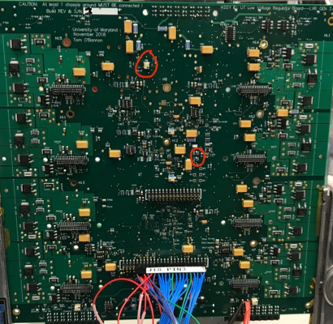
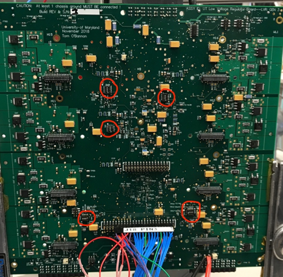
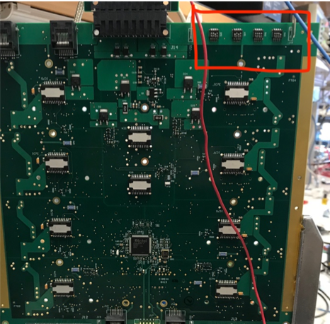
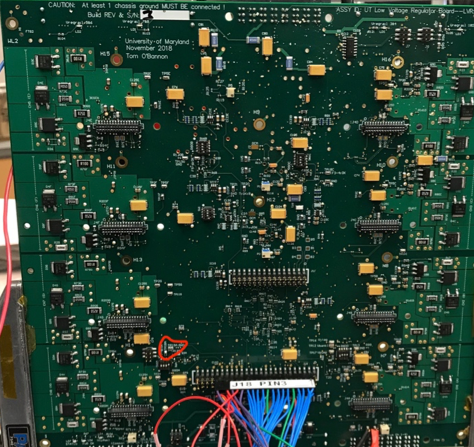

LVR QA
Before you proceed
-
Beware that
TP5is NOT GND. The silkscreen label applies to the adjacentTP2. -
Fused power input breakout board silk screen circuit labels are incorrect.
-
The LVR outputs should be connected to a benign load that can withstand having upwards of 7V output. (i.e. the LVR channel outputs follow the input power rail if the CCM is not populated and configured.)
-
Extreme caution is needed when connecting test lead clips to the test points.
-
The test points are rather fragile and easily pulled of the board.
-
Care must be taken to avoid temporary unintended shorts from the high density of surrounding components, via's, and traces.
-
When configuring the CCMs on the LVR, remember that CCM voltage types split down the middle of the LVR (i.e. CH1-4 must have the same CCM voltage, CH5-8 must have the same CCM voltage)
-
Going down the board on one side, arrange CCMs as master, slave, master, slave, etc.
-
The Master-Slave configurations require a jumper ON the LVR output breakout board that electrically connects the master and slave output rails together.
-
Note Serial Number of LVR and CCM before beginning QA
-
Verify that the chassis and power ground are isolated > 25K Ohms.
- Measure input voltage at the large lugs at the top of the board
- Use any GND test point on the board (i.e.
TP7) - Repeat measurement reversing the polarity of leads (ground isolation circuit is different each way)
-
Activate the LVR monitor if it is not already running
- Go to PuTTY and select Monitor Pi
- Both user name and password are "
lvr"
-
Set power supply initially to 1.6V and the current limited to 2.0A
-
Connect provided input breakout board. Verify polarity of connections visually
- Red wire in positive terminal of power supply
- Blue wire in negative terminal
- Negative terminal and power supply ground shorted
-
If not using the raspberry pi LVR monitor, place a DVM (DC Voltage Meter) between
TP3(3.3V) andTP6(GND) to monitor the 3.3V rail, otherwise proceed to step 8. -
Place another DVM between
TP8(1.5V) andTP6(GND) to monitor the 1.5N railNote
You can also use the LVR monitor for this section, looking at the
Vin_FPGA_3V3andVin_FPGA_1V5reading. -
Slowly increase the input voltage from the initial 1.6V to a max of 4.5V while monitoring the 3.3V and 1.5V rails to make sure they stay below the max values.
Warning
STOP IF VALUES BELOW ARE EXCEEDED to prevent damage.
- 1.5V x 110% = 1.65V
- 3.3V x 110% = 3.63V
Tip
It may be useful to let the rail approach the desired value, then turn down the setpoint to a value much below the current input voltage in order to find the plateau (max voltage where the rail 'sticks') more quickly
-
Adjust P1 to obtain 1.5V on
TP8. -
Continue increasing the input voltage and similarly adjust P2 to obtain 3.3V on
TP3. -
Both the 3.3V and 1.5V rails should be correct now and no longer increase as input voltage goes up. σV should be 0.01 V or less if possible.
-
Expected input current given by the supply at this point should be around 0.09A. If it is substantially more there may be an issue.
-
If not using the LVR monitor, place a DVM between
TP4(Vop_rail) andTP7(GND). Otherwise proceed.
-
Slowly increase the input voltage to 7V until EITHER the Vop_rail stops increasing or hits 5.5V. (Note this is just the same thing as for the 1.5V and 3.3V, just now it's 5.5V).
- Adjust P5 whilst increasing the input voltage
- The
Vop_railwill clamp at a maximum of 5.5V when properly adjusted.

Warning
IT IS IMPERATIVE THAT THE
Vop_railNOT EXCEED 5.5V !!!!Tip
In the LVR monitor software this voltage rail is denoted as
V_OPAMP_RAIL, because this is the input voltage used to power OpAmps (operational amplifiers) on the board and ccms. -
Program the FPGA
- Turn power off
- Connect jumpers between
J22(near ch8) pins 2 & 4 (V_pump) and betweenJ22pins 1 & 3 (V_jtag). - Connect programmer to
J17(back of the board, center). -
Turn power on
-
Initiate the program sequence
- If no program has been loaded onto the FPGA, go to Open Project, otherwise continue to 5.
- Inside the LVR folder select the program you want to run
- Go to Configure Device
- Click Browse, and select the
.pdbfile you wish to use to program - Set MODE to basic (should be default), and set ACTION to program
- Once that is complete, click PROGRAM
-
Check in the log that the auto-verify ran successfully.
-
Turn off power and install CCMs
-
Set dip switch configuration for undervoltage lockout and overtemp lockout
-
Locate dip switches SW6[A,B,C,D]. Note the side of the switch body labeled ON. Set the 3rd switch to ON. Leave others OFF.

-
Locate the switch labeled SW1. Set the 4th switch to ON. Leave others OFF.
-
Locate the switches on the back of the regulator (SW2-5)

- Set SW5 to [OFF, OFF, OFF, OFF]
-
For SW4, for each channel pair that has a master-slave pair, set each corresponding pin to OFF if a slave is present in the channel pair, otherwise set to ON
SW4 switcher Channels 1 CH1 & 2 2 CH3 & 4 3 CH5 & 6 4 CH7 & 8 -
Set SW2 and SW3 to [OFF, OFF, OFF, OFF]
-
Note that the ON position is labelled opposite the numbered slots (1, 2, 3, 4)
-
Additionally, note that if you wish the board to be in pulsed duty cycle, set SW3 pin 1 to OFF, otherwise keep pin at ON. For most of the QA sequence it will be more useful in ON

-
-
Undervoltage Lockout test
- Set input power to ~4.8 V
- Reduce the input power gradually, and confirm that the outputs shut off below 4.5-4.6 volts (ish).
Info
To test individual undervoltage lockouts (if needed) use the following procedure
-
Locate SW6[A, B, C, D]. The switcher-channel correspondence is given in the table below
-
For each SW6#, verify that its corresponding channels shut off when turning the switch configuration to [OFF, OFF, OFF, OFF]
-
Each channel should switch from some voltage (depending on power supply setting) to ~0V.
SW6 switcher Channels SW6A CH7 & 8 SW6B CH5 & 6 SW6C CH3 & 4 SW6D CH1 & 2 -
Overtemperature lockout test
- Locate SW1.
-
Set SW1 to [ON, ON, ON, ON].
Info
This tells the board that it should shut down if it gets above ~ 20C (room temperature).
-
Locate
LD7(bottom left corner of LVR). - Verify
LD7isON. - Verify all
V_OUTchannel values as shown on monitor go to ~0V. - Set SW1 back to nominal [OFF, OFF, OFF, ON]
-
Output standby configuration. Adjust the Voltage offsets at the following test point pairs using the following variable resistors
- CH 4-1:
TP9(Vos_gen) andTP10(GND) - CH 8-5:
TP14(Vos_gen) andTP15(GND)
Adjust P3 and P4 on each respective side of the board in order to configure the voltages. (They are beside the testpoints. You can remove the nearby CCM if it gets in your way)
Note
Each 4-channel group must be set to operate with the same output voltage according to what kind of CCM it will host as shown below:
Vos [V] Vccm [V] 1.775 2.5 1.546 1.5 1.483 1.225 - CH 4-1:
-
Use the RJ45 breakout board to perform the sense line test. Verify that the voltage of a channel goes to RAIL when the corresponding sense lines are shorted to each other. The sense lines are mapped to the RJ45 as follows:
Channels Pins RJ45 Connector CH1 1 & 2 Right (J10) CH2 (if 12/25A) 4 & 5 Right (J10) CH3 3 & 6 Right (J10) CH4 (if 12/25A) 7 & 8 Right (J10) CH5 1 & 2 Left (J16) CH6 (if 12/25A) 4 & 5 Left (J16) CH7 3 & 6 Left (J16) CH8 (if 12/25A) 7 & 8 Left (J16) Note
Slave channels will not alter voltage when shorting those channels. They will only go to RAIL when shorting their respective master channels.
-
SPI Communication test
- On the laptop's desktop, locate the "SPI test". Run this shortcut.
- The username and password are both 'spitest'
- The 4 bytes transmitted to the LVR are in the left column, the 4 received are on the right. You should see (possibly after 4-5 rounds of communication) that the message received from the LVR is the previous one that was sent.
- Finally, once communication is verified, connect the SPI_RESET line (floating green wire) to any GND test point on the LVR (the GND on the raspberry pi or the Rigol power supply also works in principle). The LVR should stop replying and you should read the response as all 00 00 00 00 until you allow the SPI_RESET to float once more.
Example
The following illustrates the kind of output you're looking for when communication is working:
04 04 04 04 03 03 03 03 05 05 05 05 04 04 04 04 06 06 06 06 05 05 05 05 07 07 07 07 06 06 06 06 -
If it is not already, set SW3 1st switch to ON (takes regulator out of pulsed mode).